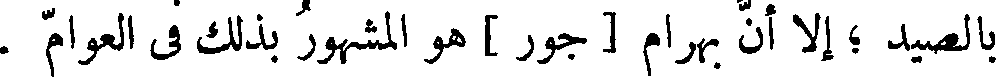
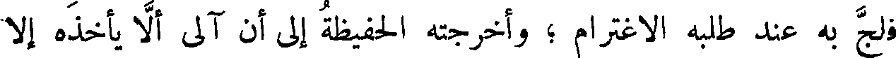
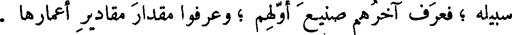
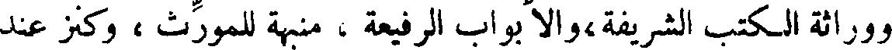
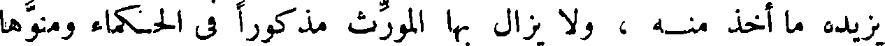

File: 000652.gt.txt (if the image is defective, simply delete all Arabic text and the line will be excluded)

يكون تزيدهم في توكيده ، واحتفالهم في إظهار تعليمه .
File: 000653.gt.txt (if the image is defective, simply delete all Arabic text and the line will be excluded)

( فضل التعلم )
File: 000654.gt.txt (if the image is defective, simply delete all Arabic text and the line will be excluded)

وقال بعضهم : كنت عند بعض العلماء ، فكنت أكتب عنه بعضا
File: 000655.gt.txt (if the image is defective, simply delete all Arabic text and the line will be excluded)

وأدع بعضا ، فقال لي : اكتب كل ما تسمع ، فإن أخس ما تسمع خير
File: 000656.gt.txt (if the image is defective, simply delete all Arabic text and the line will be excluded)

من مكانه أبيض(6) .
File: 000657.gt.txt (if the image is defective, simply delete all Arabic text and the line will be excluded)

( خصيان الحبشة والنوبة والسودان )
File: 000658.gt.txt (if the image is defective, simply delete all Arabic text and the line will be excluded)

فأما الخصيان من الحبشان والنوبة وأصناف السودان ، فإن الخصاء
File: 000659.gt.txt (if the image is defective, simply delete all Arabic text and the line will be excluded)

يأخذ منهم ولا يعطيهم ، وينقصهم ولا يزيدهم ، ويحطهم عن مقادير
File: 000660.gt.txt (if the image is defective, simply delete all Arabic text and the line will be excluded)

إخوانهم ، كما يزيد الصقالبة عن مقادير إخوتهم ، لأن الحبشي متى خصي
File: 000661.gt.txt (if the image is defective, simply delete all Arabic text and the line will be excluded)

سقطت نفسه، وثقلت حركته ، وذهب نشاطه ، ولا بد أن يعرض له
File: 000662.gt.txt (if the image is defective, simply delete all Arabic text and the line will be excluded)

فساد ، لأنه متى استقصي جبابه لم يتماسك بوله(1) ، وسلس مخرجه ،
File: 000663.gt.txt (if the image is defective, simply delete all Arabic text and the line will be excluded)

واسترخى الممسك له ، فإن هم لم يستقصوا جبابه ، فإنما يدخل الرجل منزله
File: 000664.gt.txt (if the image is defective, simply delete all Arabic text and the line will be excluded)

من له نصف ذلك العضو(2) . وعلى أنك لا تجد منهم خصيا أبدا ، إلا وبسرته
File: 000665.gt.txt (if the image is defective, simply delete all Arabic text and the line will be excluded)

بجرة ، ونفخة(3) شنيعة ، وذلك عيب شديد، وهو ضرب من الفتق ، مع
File: 000666.gt.txt (if the image is defective, simply delete all Arabic text and the line will be excluded)

قبحه في العين ، وشنعته في الذكر . وكل ما قبح في العين فهو مؤلم ،
File: 000667.gt.txt (if the image is defective, simply delete all Arabic text and the line will be excluded)

وكل ماشنع في النفس فهو مؤذ . وما أكثر ماتجد فيهم الألطع (4) ، وذلك
File: 000668.gt.txt (if the image is defective, simply delete all Arabic text and the line will be excluded)

فاش في باطن شفاههم . ومتى كانت الشفاه هدلا ، وكانت المشافر منقلبة ،
File: 000669.gt.txt (if the image is defective, simply delete all Arabic text and the line will be excluded)

كانت أظهر للطع ، وهو ضرب من البرص . والبياض الذي يعرض لغراميل
File: 000670.gt.txt (if the image is defective, simply delete all Arabic text and the line will be excluded)

الخيل وخصاها(5) ، ضرب أيضا من البرص ، وربما عرض مثل ذلك
File: 000671.gt.txt (if the image is defective, simply delete all Arabic text and the line will be excluded)

لحشفة قضيب المحتون ، إما لطبع الحديد ، وإما لقرب(6) عهده بالإحداد
File: 000672.gt.txt (if the image is defective, simply delete all Arabic text and the line will be excluded)

وسقي الماء ، إلا أن ذلك لا يعدو مكانه .
File: 000673.gt.txt (if the image is defective, simply delete all Arabic text and the line will be excluded)

( لهج ملوك فارس بالصيد )
File: 000674.gt.txt (if the image is defective, simply delete all Arabic text and the line will be excluded)

وزعموا - وكذلك هو في كتبهم - أن ملوك فارس ؛ كانت لهجة
File: 000675.gt.txt (if the image is defective, simply delete all Arabic text and the line will be excluded)

بالصيد ؛ إلا أن بهرام [ جور ] هو المشهور بذلك في العوام .
File: 000676.gt.txt (if the image is defective, simply delete all Arabic text and the line will be excluded)

وهم يزعمون أن فيروز بن قباذ(1) الملك الفارسي ؛ ألح في طلب حمار
File: 000677.gt.txt (if the image is defective, simply delete all Arabic text and the line will be excluded)

أخدري ؛ وقد ذكر له ووصف ؛ فطاوله عند طلبه والتماسه ؛ وجد في ذلك
File: 000678.gt.txt (if the image is defective, simply delete all Arabic text and the line will be excluded)

فلج به عند طلبه الاغترام ؛ وأخرجته الحفيظة إلى أن آلى ألا يأخذه إلا
File: 000679.gt.txt (if the image is defective, simply delete all Arabic text and the line will be excluded)

أسرا ؛ ولا يطارده إلا فردا ؛ فحمل فرسه عليه(2) ؛ فحطه في خبار (3) فجمع
File: 000680.gt.txt (if the image is defective, simply delete all Arabic text and the line will be excluded)

جراميزه وهو على فرسه ووثب ؛ فإذا هو على ظهره؛ فقمص به،فضم فخذيه
File: 000681.gt.txt (if the image is defective, simply delete all Arabic text and the line will be excluded)

فحطم بعض أضلاعه ؛ ثم أقبل به إلى معظم الناس ؛ وهم وقوف ينظرون
File: 000682.gt.txt (if the image is defective, simply delete all Arabic text and the line will be excluded)

إليه وهو راكبه .
File: 000683.gt.txt (if the image is defective, simply delete all Arabic text and the line will be excluded)

قالوا : وكان الملك منهم إذا أخذ عيرا أخدريا وغير ذلك ؛ فإذا وجده
File: 000684.gt.txt (if the image is defective, simply delete all Arabic text and the line will be excluded)

فتيا(4) وسمه باسمه(5) وأرخ في وسمه يوم صيده وخلى سبيله ؛ وكان كثيرا
File: 000685.gt.txt (if the image is defective, simply delete all Arabic text and the line will be excluded)

إذا ما صاده الملك الذي يقوم به بعده ؛ سار فيه مثله تلك السيرة وخلى
File: 000686.gt.txt (if the image is defective, simply delete all Arabic text and the line will be excluded)

سبيله ؛ فعرف آخرهم صنيع أولهم ؛ وعرفوا مقدار مقادير أعمارها .
File: 000687.gt.txt (if the image is defective, simply delete all Arabic text and the line will be excluded)
( وراثة الكتب )
File: 000688.gt.txt (if the image is defective, simply delete all Arabic text and the line will be excluded)

ووراثة الكتب الشريفة،والأبواب الرفيعة ، منبهة للمورث ، وكنز عند
File: 000689.gt.txt (if the image is defective, simply delete all Arabic text and the line will be excluded)
الوارث ، إلا أنه كنز لا تجب فيه الزكاة ، ولا حق السلطان .
File: 000690.gt.txt (if the image is defective, simply delete all Arabic text and the line will be excluded)

وإذا كانت الكنوز جامدة ، ينقصها ما أخذ منها ، كان ذلك الكنز مائعا
File: 000691.gt.txt (if the image is defective, simply delete all Arabic text and the line will be excluded)

يزيده ما أخذ منه ، ولا يزال بها المورث مذكورا في الحكماء ومنوها
File: 000692.gt.txt (if the image is defective, simply delete all Arabic text and the line will be excluded)

باسمه في الأسماء ، وإماما متبوعا وعلما منصوبا ، فلا يزال الوارث محفوظا،
File: 000693.gt.txt (if the image is defective, simply delete all Arabic text and the line will be excluded)

ومن أجله محبوبا ممنوعا ، ولا تزال تلك المحبة نامية ، ما كانت تلك الفوائد
File: 000694.gt.txt (if the image is defective, simply delete all Arabic text and the line will be excluded)

قائمة ؛ ولن تزال فوائدها موجودة ما كانت الدار دار حاجة ، ولن يزال
File: 000695.gt.txt (if the image is defective, simply delete all Arabic text and the line will be excluded)

من تعظيمها في القلوب أثر ، ما كان من فوائدها على الناس أثر .
File: 000696.gt.txt (if the image is defective, simply delete all Arabic text and the line will be excluded)

وقالوا : من(1) ورثته كتابا ، وأودعته علما ، فقد ورثته ما يغل ولا
File: 000697.gt.txt (if the image is defective, simply delete all Arabic text and the line will be excluded)

يستغل ، وقد ورثته الضيعة التي لا تحتاج إلى إثارة(2) ، ولا إلى سقي ، ولا إلى
File: 000698.gt.txt (if the image is defective, simply delete all Arabic text and the line will be excluded)

إسجال بإيغار (3) ، ولا إلى شرط ، ولا تحتاج إلى أكار (4) ، ولا إلى أن
File: 000699.gt.txt (if the image is defective, simply delete all Arabic text and the line will be excluded)

تثار (5) ، وليس عليها عشر ، ولا للسلطان عليها خرج . وسواء أفدته علما
File: 000700.gt.txt (if the image is defective, simply delete all Arabic text and the line will be excluded)

أو ورثته آلة علم ، وسواء دفعك إليه الكفاية ، أو ما يجلب الكفاية . وإنما
File: 000701.gt.txt (if the image is defective, simply delete all Arabic text and the line will be excluded)

تجري الأمور وتتصرف الأفعال على قدر الإمكان ، فمن لم يقدر إلا على